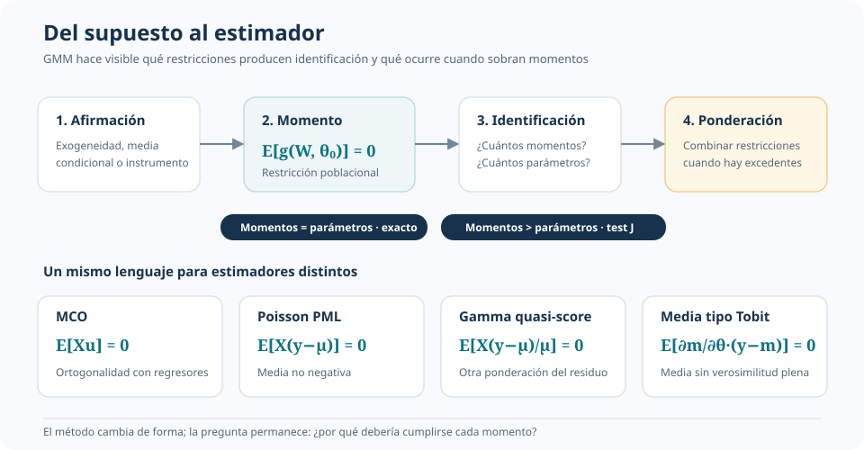
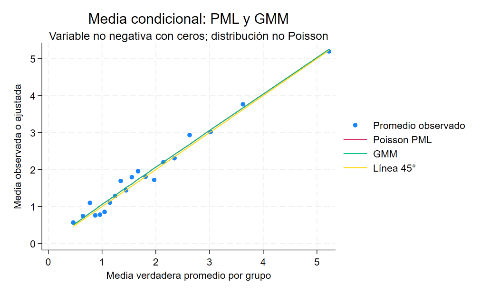
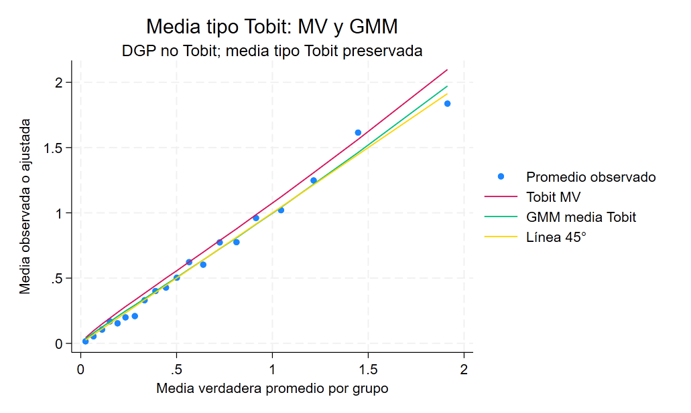
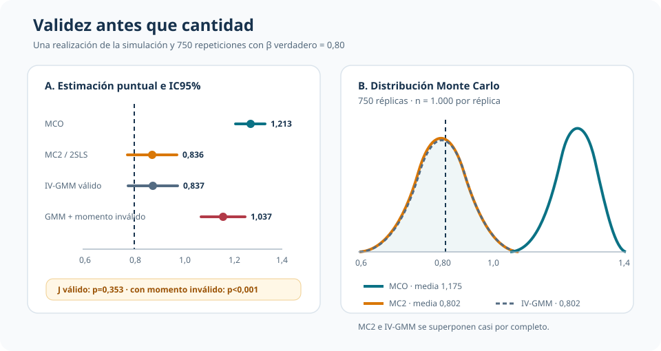

De condiciones de momento a IV-GMM: cuándo ponderar ayuda y cuándo un momento invalida el estimador
Un lenguaje común para estimar, diagnosticar y entender qué restricciones sostienen un resultado
GMM no crea información: organiza las restricciones que estamos dispuestos a defender.
Este análisis presenta el método generalizado de los momentos como un lenguaje que conecta estimadores conocidos y luego lo somete a una prueba decisiva con variables instrumentales. La ponderación eficiente puede aprovechar momentos válidos; un momento falso puede desplazar el estimador con gran precisión aparente.
Parámetro verdadero
β = 0,80
La simulación permite conocer la referencia exacta
Sistema IV-GMM
6 momentos
Cuatro parámetros y dos restricciones sobreidentificantes
Momentos válidos
J = 2,086
p=0,353; no hay evidencia fuerte de incompatibilidad
Momento inválido
J = 512,5
p<0,001 y el estimador se desplaza a 1,037
Pregunta central
¿Qué aporta describir una estimación mediante condiciones de momento? La respuesta no es un nuevo comando. GMM obliga a explicitar qué promedio poblacional debe ser cero, qué parámetros identifica, cómo se combinan restricciones excedentes y qué ocurre cuando una de ellas es falsa.
La simulación permite conocer el proceso generador, la fuente de endogeneidad y el valor verdadero. Esa transparencia convierte a GMM en el hilo que une dos niveles: primero, estimadores familiares vistos como soluciones a momentos; después, IV-GMM como un problema de identificación y ponderación bajo sobreidentificación.

Un lenguaje común, no un catálogo
GMM parte de restricciones poblacionales de la forma
\[ E[g(W_i,\theta_0)]=0. \]
El análogo muestral reemplaza la esperanza por un promedio y elige \(\widehat\theta\) para acercar los momentos a cero. Si hay tantos momentos como parámetros, el sistema queda exactamente identificado. Si sobran momentos, una matriz de ponderación decide cómo conciliar las restricciones.
| Estimador conocido | Condición que lo sostiene | Qué se aprende al escribirla como momento |
|---|---|---|
| MCO | \(E[Xu]=0\) | Las ecuaciones normales son ortogonalidades muestrales |
| Poisson PML | \(E[X(y-\mu)]=0\) | Puede estimar una media log-lineal sin afirmar que el resultado sea un conteo Poisson |
| Gamma quasi-score | \(E[X(y-\mu)/\mu]=0\) | La misma media puede ponderar los residuos de otra manera |
| Media tipo Tobit | \(E[\partial m/\partial\theta\,(y-m)]=0\) | Puede estimarse la media defendible sin imponer toda la verosimilitud Tobit |
Los ejemplos cumplen una función precisa: separar el objeto que se desea estimar de la distribución completa. Poisson PML y Gamma GLM coinciden con sus implementaciones GMM cuando usan la misma ecuación exactamente identificada. En el ejercicio Tobit, GMM aproxima directamente una media no lineal preservada por el diseño, mientras la máxima verosimilitud impone una distribución latente que fue alterada deliberadamente.


La flexibilidad no elimina supuestos. Cambia dónde están escritos: en la forma de la media, los instrumentos y las condiciones de momento elegidas.
Cuándo la ponderación importa
Con sobreidentificación hay varias restricciones válidas para menos parámetros. GMM minimiza una distancia cuadrática entre los momentos muestrales y cero. La matriz de ponderación asigna más o menos importancia a cada discrepancia y, bajo heterocedasticidad, puede usar la covarianza robusta estimada de los momentos.
MC2 con errores robustos modifica la inferencia, pero conserva el estimador puntual de dos etapas. IV-GMM robusto modifica también la métrica que combina los momentos y puede cambiar el punto estimado. Esa diferencia es potencial, no una garantía de resultados dramáticos.
Aplicación central: endogeneidad e instrumentos
La simulación genera un regresor endógeno correlacionado positivamente con el error estructural y fija su coeficiente verdadero en 0,80. Tres instrumentos válidos proporcionan variación exógena y producen una primera etapa fuerte: \(R^2\) parcial robusto de 0,454 y \(F=800,48\).
| Estimador | Coeficiente | EE robusto | IC95% | Lectura |
|---|---|---|---|---|
| MCO | 1,213 | 0,015 | [1,183; 1,243] | Absorbe la endogeneidad positiva |
| MC2 / 2SLS | 0,836 | 0,026 | [0,786; 0,886] | Usa los instrumentos válidos |
| IV-GMM robusto | 0,837 | 0,026 | [0,787; 0,887] | Repondera los mismos momentos |
| IV-GMM con momento inválido | 1,037 | 0,023 | [0,993; 1,081] | Preciso alrededor de una restricción falsa |
MC2 e IV-GMM quedan prácticamente superpuestos. En este diseño, instrumentos fuertes y una ponderación robusta poco disruptiva hacen que GMM no mejore visiblemente la precisión. Su aporte es conceptual: vuelve explícito cómo se combinan los seis momentos que identifican cuatro parámetros.
Sobreidentificación y test J
Las dos restricciones excedentes permiten evaluar compatibilidad interna. Con instrumentos válidos, el test de Hansen entrega \(J=2,086\) y p=0,353. El no-rechazo no prueba validez: indica que la muestra no ofrece evidencia fuerte contra el conjunto de momentos impuesto.
El diagnóstico tiene sentido solo después de justificar los instrumentos. Puede tener baja potencia y tampoco identifica por sí solo cuál restricción falla.
El costo de un momento falso
El ejercicio agrega deliberadamente un instrumento contaminado por el error estructural. Aunque suma una condición, no suma información válida: IV-GMM pasa de 0,837 a 1,037 y el test J sube a 512,5. El intervalo incluso se estrecha, recordando que precisión alrededor de un pseudo-parámetro no corrige una falla de identificación.

Monte Carlo: qué cambia sistemáticamente
El ejercicio repite el diseño 750 veces con 1.000 observaciones por réplica.
| Estimador | Media de \(\widehat\beta\) | Desvío estándar | Sesgo promedio |
|---|---|---|---|
| MCO | 1,1752 | 0,0271 | 0,3752 |
| MC2 / 2SLS | 0,8018 | 0,0421 | 0,0018 |
| IV-GMM robusto | 0,8018 | 0,0422 | 0,0018 |
La comparación confirma que corregir la endogeneidad cambia radicalmente el centro de la distribución. Cambiar de MC2 a IV-GMM robusto casi no altera sesgo ni dispersión en este proceso generador. GMM no “gana” por ser más general: gana contenido cuando la ponderación eficiente aprovecha heterocedasticidad o momentos adicionales válidos e informativos.
La calidad de una estimación GMM depende primero de la validez e información de sus momentos y solo después de cómo se ponderan. Más restricciones pueden aumentar eficiencia; una restricción falsa puede producir un estimador preciso y equivocado.
Alcance y límites
- Los datos son simulados para aislar mecanismos; en una aplicación real, la validez no se conoce y debe defenderse con teoría o diseño institucional.
- El test J es un diagnóstico conjunto, no una prueba autónoma de identificación.
- La inferencia robusta protege frente a ciertas formas de heterocedasticidad, no frente a momentos inválidos.
- Agregar muchos momentos puede introducir redundancia y ruido al estimar la matriz de ponderación, aun cuando no sean falsos.
Conclusión
Pensar mediante momentos cambia la pregunta econométrica. En lugar de empezar por un estimador con nombre propio, obliga a preguntar qué restricción poblacional lo sostiene, qué información identifica cada parámetro y cómo se combinan las restricciones cuando sobran.
Los ejemplos de media muestran la amplitud del lenguaje; IV-GMM revela sus consecuencias. Con momentos válidos, MC2 e IV-GMM recuperan el parámetro y pueden diferir por ponderación. Con un momento inválido, GMM intenta conciliar una afirmación falsa y se desplaza. La flexibilidad del método es real, pero su credibilidad nunca supera la de las condiciones que se le entregan.